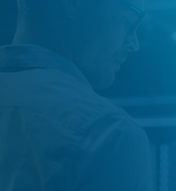

Страхование
киберрисков
Экспертный аудит и проектирование системных решений для трансформации цифровых угроз
в управляемый механизм защиты капитала и деловой репутации
Страхование киберрисков — это инструмент финансовой защиты от убытков, вызванных хакерскими атаками, утечками данных или системными сбоями. В эпоху цифровизации информационная безопасность становится не просто задачей ИТ-отдела, а фундаментом устойчивости всего бизнеса.
Мы трансформируем непредсказуемые цифровые угрозы в управляемый механизм защиты капитала. Мы формируем стратегию, которая закрывает финансовый разрыв между техническими мерами защиты и реальными потерями от простоя или юридических исков.
Соответствие требованиям ФЗ-152 и защита
данных
Согласно российскому законодательству, любая компания,
обрабатывающая данные клиентов или сотрудников, несет строгую ответственность за их конфиденциальность.
Полис киберстрахования помогает минимизировать юридические и административные риски.
Покрытие штрафов и санкций
Страхование помогает компенсировать расходы, связанные с
административными взысканиями регуляторов за непреднамеренное нарушение правил хранения и обработки
данных.
Юридическое сопровождение
Полис покрывает услуги юристов для представления интересов
компании при проверках Роскомнадзора или в судебных спорах с субъектами персональных данных.
Уведомление пострадавших
Организация процесса массового информирования клиентов об
утечке (согласно требованиям закона), включая работу колл-центров и почтовые рассылки.
Какие риски
покрывает
полис
Киберстрахование — это комплексный продукт, который
защищает как от внешних атак, так и от внутренних инцидентов. Мы
формируем покрытие по следующим направлениям.
Прямые убытки компании (First
Party)
Возмещение расходов на восстановление данных, программного обеспечения и ИТ-инфраструктуры после
атак (включая вирусы-вымогатели/Ransomware) или технических сбоев.
Ответственность перед третьими лицами
Защита на случай исков от клиентов или партнеров из-за утечки персональных данных, коммерческой
тайны или случайной передачи вредоносного ПО.
Прерывание бизнес-процессов (Business Interruption)
Компенсация упущенной выгоды и покрытие постоянных расходов в случае остановки деятельности
компании из-за сбоя в ИТ-системах или кибератаки.

Расходы на реагирование и
расследование
Оплата услуг ИТ-криминалистов (forensics), юридических консультантов, PR-агентств для защиты
репутации и затрат на уведомление пострадавших лиц.

Почему недостаточно просто «хорошего
ИТ-отдела»
Даже самые совершенные системы защиты имеют уязвимости, связанные
с человеческим фактором или атаками «нулевого дня». Роль страхового брокера в киберстраховании — закрыть
финансовый разрыв, который не может устранить антивирус. Мы сопровождаем клиента на всех этапах
формирования страховой программы, обеспечивая экспертную поддержку в каждом из ключевых
направлений.
Аудит ИБ-защищенности
Оценка зрелости ваших ИТ-процессов для формирования анкеты
страховщику, что напрямую влияет на стоимость полиса и объем предоставляемого покрытия.
Настройка покрытия
Включение рисков «социальной инженерии» (ошибки
сотрудников), фишинга и целенаправленных атак на цепочки поставок.
Подбор емкости
Поиск страховых компаний с реальным опытом урегулирования
ИТ-инцидентов и надежными перестраховочными программами для гарантии выплат при крупных убытках.
Юридическая выверка
Устранение «скрытых» исключений в правилах, которые часто
касаются государственного хакерства или использования нелицензионного ПО.
Защищен ли ваш бизнес
от растущих
киберугроз?
от растущих
киберугроз?
Защитите свой цифровой актив сегодня и минимизируйте финансовые
последствия киберинцидентов. Мы проведем анализ вашего профиля рисков и предложим решение, которое
обеспечит полную финансовую защиту вашей ИТ-инфраструктуры.